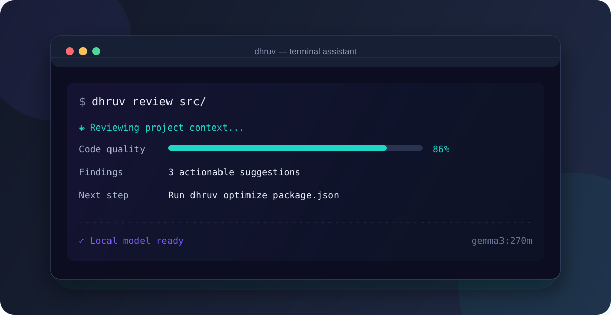

Dhruv CLI API - v1.4.0
A local-first AI command center for your terminal.
Ask better questions. Understand unfamiliar code. Ship with confidence.
Website · npm · Issues · Contributing



Why Dhruv?
Dhruv brings a focused AI toolkit into the terminal, powered by local Ollama models. It keeps your workflow close to the codebase, works without a hosted AI account, and turns everyday developer questions into fast, actionable output.
| ✦ Think with you Explain concepts, suggest approaches, and turn errors into clear next steps. |
◈ Inspect deeply Review code, optimize files, and scan projects for common security risks. |
⌁ Fit your flow Use an interactive menu, shell completion, JSON output, or your own plugins. |
Start in 60 seconds
1. Install Dhruv
npm install -g @rahul05ranjan/dhruv-cli
2. Start a local model
Install Ollama, then run:
ollama serve
ollama pull gemma3:270m
3. Configure once, then go
dhruv init
dhruv suggest "how should I structure this Node.js service?"
Dhruv requires Node.js 18 or newer. The default model is gemma3:270m; choose any model available in your Ollama installation during setup.
A command surface built for shipping
| Command | What it does |
|---|---|
dhruv suggest <query> |
Generate practical suggestions for a development task |
dhruv explain <query> |
Explain a concept, command, or unfamiliar error |
dhruv fix <query> |
Analyze a coding issue and propose a fix |
dhruv review <file-or-dir> |
Review up to ten code files for quality and maintainability |
dhruv optimize <file> |
Find actionable improvements for source or configuration files |
dhruv security-check [file-or-dir] |
Run a local security analysis |
dhruv generate <type> <target> |
Generate tests, documentation, or other code |
dhruv status |
Check Ollama connectivity and configured models |
dhruv health |
Run a comprehensive environment health check |
dhruv metrics |
Inspect local usage and performance metrics |
dhruv project-type |
Detect the current project type |
dhruv menu |
Open the interactive command palette |
dhruv completion [shell] |
Generate Bash, Zsh, or Fish completion |
Common workflows
# Understand and plan
dhruv explain "git rebase vs merge"
dhruv suggest "deploy a React app to Vercel"
# Improve an existing project
dhruv review src/
dhruv optimize package.json
dhruv security-check src/
# Generate and automate
dhruv generate tests src/utils/helpers.js
dhruv completion zsh > ~/.zsh/completions/_dhruv
Configuration that stays out of your way
Run dhruv init to set the Ollama model, response format, verbosity, and terminal theme. Configuration is stored in .dhruv-config.json in the current project directory.
For one-off runs, use global flags:
dhruv suggest "summarize this migration" --model llama3.2 --json
dhruv review src/ --verbose
Extend it with plugins
Drop an ESM module into your project's plugins/ directory. Dhruv loads .js plugins before parsing the command line, so you can add commands without changing the core CLI.
// plugins/hello.js
export default (program) => {
program
.command('hello-plugin')
.description('Say hello from a project plugin')
.action(() => console.log('Hello from Dhruv!'));
};
Then run:
dhruv hello-plugin
Documentation & project guides
| Resource | Link |
|---|---|
| Product site | rahul05ranjan.github.io/dhruv-cli |
| API reference | Generated TypeDoc |
| Contributing | CONTRIBUTING.md |
| Security policy | SECURITY.md |
| Publishing notes | docs/publishing-fix.md |
Development
npm install
npm run type-check
npm test
npm run lint
npm run build
License
MIT © Rahul Ranjan